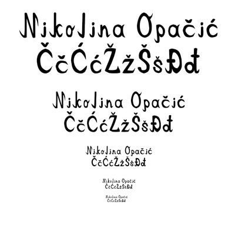
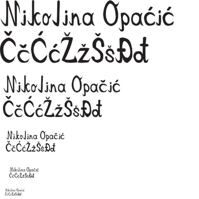
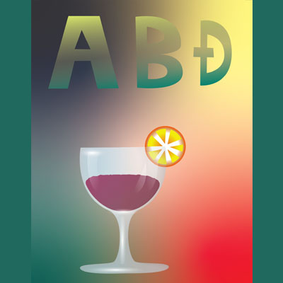
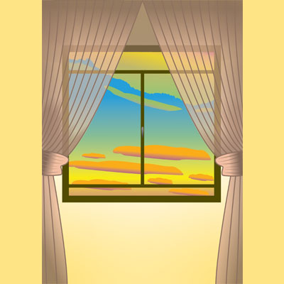
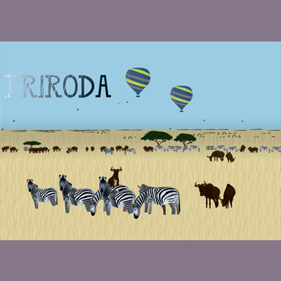
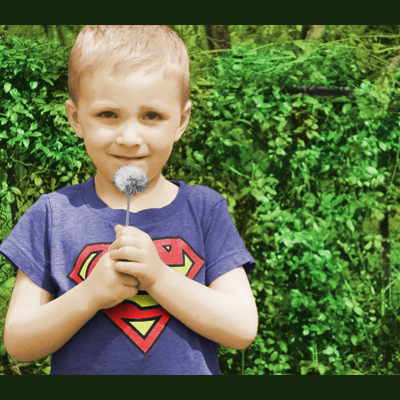
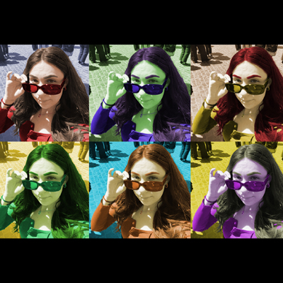
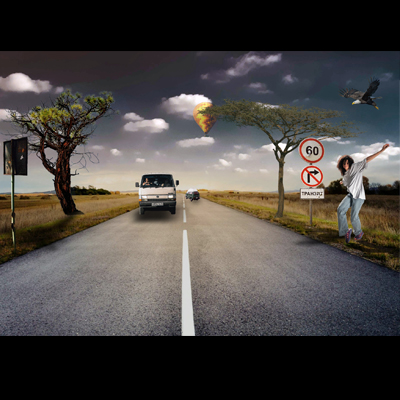
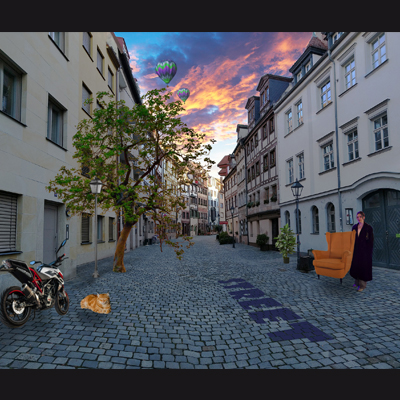

Vježba 1- font
 Vježba 2- Bezierova krivulja

Vježba 3- boja, transformacije


Vježba 4- gradijenti, transparencija
 Projektni zadatak 1
Vježba 5- retuširanje


Vježba 6- koloriranje
 Vježba 7- fotomontaža
Projektni zadatak 2
Vježba 8- cinemagraf


Vježba 9- video obrada
Vježba 10- web stranica u HTML-u
web stranica vježbe 10